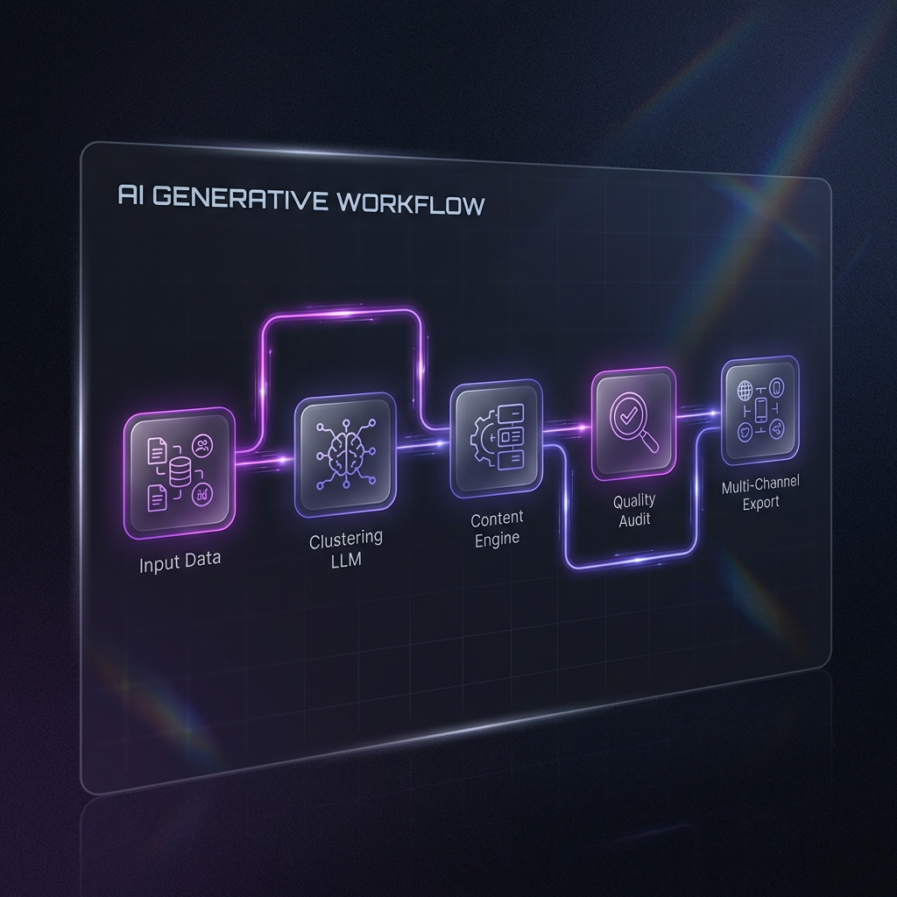

Incorporate Into My
Audit
Generative Workflow Architecture
Autonomous LLM chains that execute business processes from input to multi-channel export.
Step 1: Data Ingestion
Scraping and cleaning raw unstructured business data.
Step 2: Clustering
LLM-driven categorization of data into actionable high-intent segments.
Step 3: Synthesis
Generating custom assets (copy, reports, creative) based on segments.
Step 4: Quality Gate
Self-correcting AI layer verifying output against brand guidelines.